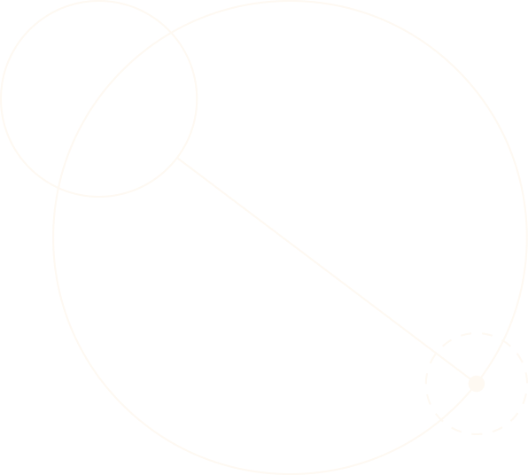
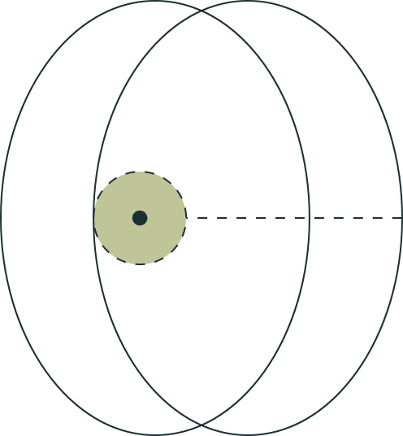
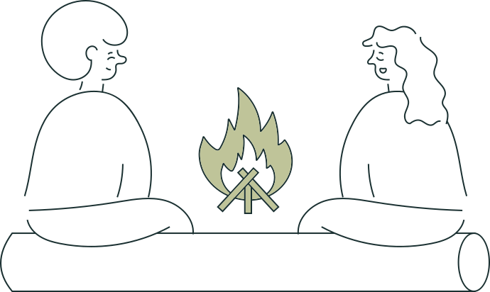
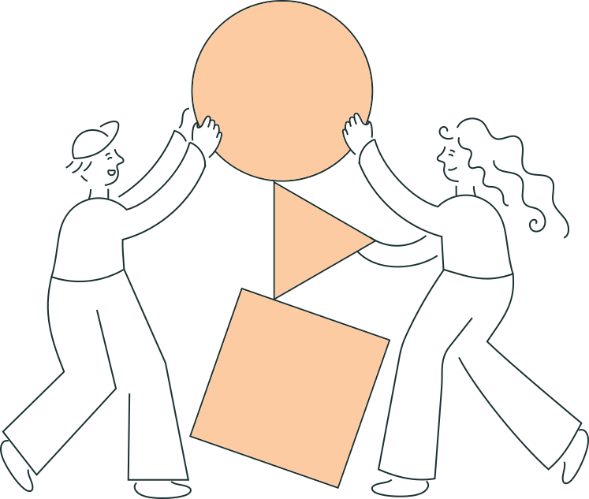
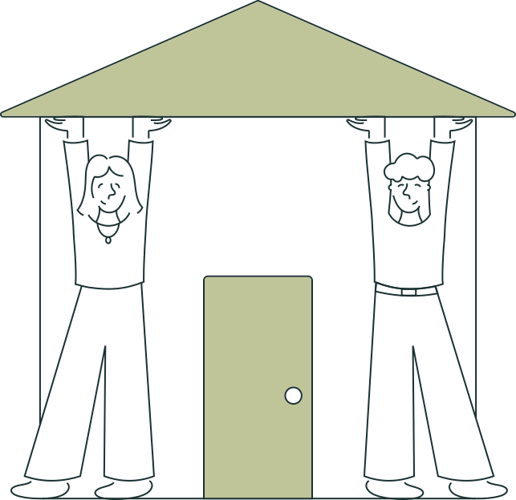

For public agencies and nonprofits in health, climate and housing
Making the Invisible Visible
For the ones who’ve built their careers around serving communities, and can feel what gets lost between what people say and what gets decided. Together, we name the invisible rules behind that loss, and practice justice in the everyday choices that seem too small to matter.

Who this is for
For the ones carrying what communities say, from the first meeting to the final decision.
You’re the ones carrying what communities say into what gets decided, together. What community members share at the listening session becomes the plan one of you drafts and the other defends in front of the board. The relationships one of you tends with community partners are what the other points to when a funder asks what changed. You’re both here for the same reason: you care deeply about your communities, and you want to see them healthy, safe, thriving and free.
And at every step, something gets lost.
In the listening
When the problem is defined before anyone asks the people living it.
In the translating
When people’s own words get smoothed into something that no longer means anything.
In the showing
When the board sees a number and not the stories or the people behind it.
In the deciding
When the priority everyone agreed on never gets a budget.
Some of it you watch happen, and push back on when you can. Some of it you can only feel: that however hard you try, the way of working you believe in doesn’t stick.
And it compounds: each time community members give their evenings and never hear what came of it, partners pull back a little more, and the distance between what your organization says and what it does grows.

Why it keeps happening
The rules that shape how your organization listens, plans and decides are the ones no one can see.
Most of it comes down to rules no one wrote down. The decision is often shaped before anyone sends the invitation, by the budget line, the sign-off and the funder’s calendar. A number reads as rigorous, a story reads as anecdote, and review softens every honest line until it fits. And underneath sits the conditioning so many of us carry: that experts decide and everyone else gets consulted. Because we can’t see these things, they pass for common sense. And while the commitments live in the strategic plan, the everyday choices run on that conditioning, so the old way wins whenever time gets tight.
Making the invisible visible starts with naming them, so we can choose to disrupt them, together.

A note from Andréanne
I’m Andréanne, founder of ACBC Studio. I’ve lived in the in-between my whole life, learning to bridge worlds so I’d be understood.
Bridging worlds became my work: helping organizations listen, plan and decide with communities. I started in a junior role at a city health department and have spent almost seven years since leading projects, so I’ve been both the practitioner carrying what people said back to the office and the project lead answering to boards and funders. Along the way, my doctorate asked why so much of what people share gets lost before it reaches a decision. Rarely, I found, is it a lack of care. More often, it’s the unwritten rules in how our institutions listen, decide and count evidence.
That’s what I help teams see and disrupt, so what communities know shapes what happens next. I work alongside you, not for you, so the learning and the relationships stay with you long after I’ve gone.
Read my storyWays to work together
Three ways in, from wherever your team is now
Each one starts with the work already on your desk. And unlike a one-off training or a consultant who helicopters in and out, each one leaves your team able to keep going without me: a shared way of doing this work, tools the next person can pick up when someone moves on, and stronger relationships with your communities.
-
First series fall 2027

Open what’s possible
Un-Learning Series
The part of community engagement your degree didn’t teach.
For teams who keep falling back on how they were trained.
So your team questions the old way together, and your commitments show up in the work.
-

Orient the work
Sensemaking Tools
Let what people told you set the direction.
For teams with a folder of what people said, or a goal without a path.
So your organization plans from what communities know, and can show where it came from.
-

Walk it together
Wayfinding Partnership
Where your team’s projects become a practice.
For teams who’ve started working differently, and it’s hard to hold.
So the new way holds when time is tight, and communities share a decision that matters.
Not sure which one fits? Tell me what’s on your desk, and we’ll find where your team begins.
In their words
“They were with me in every stage.”
“Her empathy helped turn research relationships with community groups into shared partnerships.”
“We grounded our strategic planning in what community members actually told us.”

Where to begin
Let’s start before the next decision is made.
You’ve carried this for a long time. And there’s an opening right now: there’s probably a plan, a decision or an engagement on your calendar soon.
Plan it the old way, and you’ll likely end up revisiting it later. Plan it with communities, and the next decision gets easier, and so does the one after that.
The best time to start was years ago. The next best time is this one.
Newsletter
Letters from the In‑Between
Letters for those of us in the in-between, disrupting institutions from within.
Occasional letters on what I’m learning in health, housing and climate, each with a small way to disrupt the status quo in your next plan, meeting or decision.